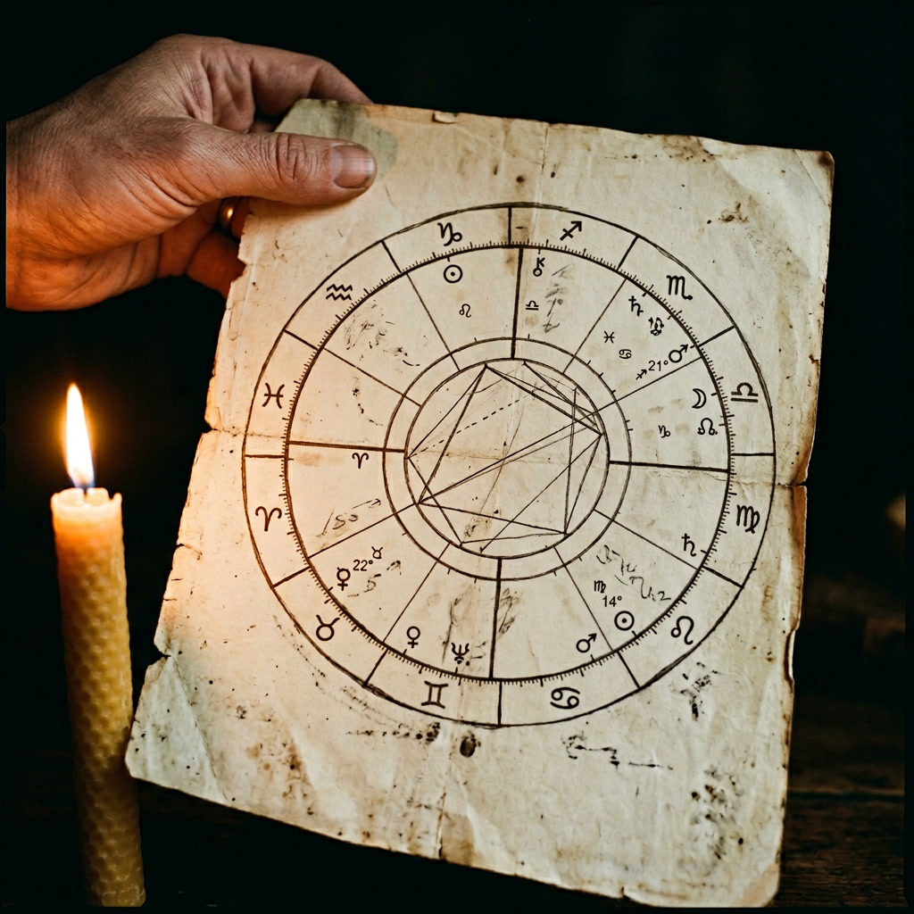

Didn't see that coming, did you? Good. Keep reading.
When most people hear the word astrology, their eyes glaze over. Or roll. Possibly both.
And honestly? That's fair.
It probably starts somewhere in childhood. Your older sister glances at you across the dinner table and says, "you're such a Libra," with the kind of confidence that only older sisters possess. You have no idea what a Libra is. She explains: twelve zodiac signs, birthdays, characteristics, the whole thing. She's a Sagittarius, she tells you proudly. Fiery, opinionated, born to travel. "I'll plan the next trip," she announces, "because I'm a Sagittarius and I simply know best."
You think: what is this nonsense?
But then it keeps happening. At school, at university, at family gatherings. So one day you Google it. Some of it fits, some of it doesn't. Then your aunt catches you off guard. "Oh, you're a Libra? Your Monday is going to be amazing, but watch your spending." Monday arrives. It's a disaster. Wallet perfectly intact, spirit thoroughly crushed.
You write the whole thing off. Decide that anyone who believes in astrology is, to put it diplomatically, not entirely well.
Here's the thing though.
Horoscopes? Largely nonsense. The kind your aunt reads from a newspaper over her morning tea . yes, let that go.
But astrology itself? That's a different conversation entirely.
Think about it this way. If astrology were really just twelve personalities, you'd be meeting the same twelve people on a loop for the rest of your life. The same Taurus on the bus. The same Cancer at the coffee shop. The same Scorpio at every party, giving you that look.
The math alone should make us suspicious.
But astrology was never meant to work that way.
The moment you were born, everything was in motion. The planets, the stars, the sun, the moon, each one sitting in a specific position in the sky, at a specific degree, at that specific hour, minute, and second. That arrangement has never existed before. It will never exist again. It was, in the most literal sense, a snapshot of the universe taken just for you.
That's your natal chart. That's you.
You are not simply a Taurus. You are not just a Cancer. You are an entire cosmos compressed into a single moment, and astrology is the language used to read it.
Here's how.
This is what your sister was talking about at the dinner table. Libra, Aries, Pisces, whatever yours is, it's determined by the day and month you were born, and it does mean something real. When you read your sign's description and some of it lands with uncomfortable accuracy, that's why.
But the Sun sign is your most primal self. The version of you that existed before life got complicated, before heartbreak, growth, and hard lessons shaped you into who you are today. You see it most clearly in children, in that unfiltered, instinctive way they move through the world.
It's real. It's just not the whole story.

The Sun stays in each sign for about a month. The Moon moves faster, shifting every two and a half days. Which means the timing of your birth matters enormously here. A few days in either direction, and you're dealing with something entirely different.
What the Moon deals in is this: your interior life. The feelings you share freely with the people closest to you and carefully guard from everyone else.
Say you're an Aries, all fire and impulse, first to act, first to speak, zero filter. Astrology would have you permanently on the verge of combustion. But your Moon is in Virgo. Grounded, controlled, quietly analytical. So your Moon steps in, steadies the flame, teaches you to check yourself before the explosion. You process internally. You hold it together in public. And more than once, someone has looked at you slightly puzzled and said,
That's the Moon at work. It doesn't cancel your Sun. It collaborates with it, complicates it, adds depth to it.
It is, without question, one of the most revealing placements in the entire chart.
This one shifts every two hours. Not every two days. Not every month. Every two hours.
Which is why someone born on the exact same day as you can feel like a completely different species. Same Sun, same Moon potentially, and yet you meet them and think: we share a birthday? In what universe are we the same person?
Your Rising Sign is the first impression you make before you've said a single word. The energy you carry into a room. The instinct strangers act on in the first few seconds of meeting you.
Take Cancer rising. To the outside world, you read as warmth itself. approachable, nurturing, the kind of person who reminds people of their favourite parent on a good day. You could be sitting quietly at a bar, minding your own business, and a complete stranger three drinks deep will materialise beside you and begin confessing things they haven't told their therapist. Not because you asked. Because your presence radiates the kind of safety that bypasses people's better judgement entirely.
From the inside, the world through Cancer rising eyes is a place of connection first, everything else second. New environments feel unsettling until they become familiar. Criticism lands harder than it should. Minor conflict feels bigger than it is.
And here's where it gets complex. Your Rising doesn't just add a layer. It interacts with everything else. A Sagittarius Moon that wants to blurt out every thought? A Cancer rising might make you pause, soften the delivery, read the room first.
This is why no two charts are alike. It's not twelve personalities. It's an endlessly shifting conversation between every placement you carry.
If the Sun is who you are and the Moon is what you feel, Mercury is how you express all of it. It governs the way your mind works, how you form ideas, deliver opinions, crack jokes, argue a point, win an argument, and occasionally derail an entire conversation because something more interesting occurred to you mid-sentence.
It's what your friends encounter most often. The texture of you.
Aquarius Mercury, for example, operates on a slightly different frequency to everyone else in the room, and is usually perfectly aware of it. At their best, they spot the solution nobody considered, combine cold logic with genuine creative brilliance, and could, given the right environment, invent their own language and somehow convince other people to speak it.
The downside: all that expansive thinking can drift into detachment. Emotional undertones get missed. Feelings get underweighted. Their instinct to challenge conventional thinking, while often valuable, creates friction in rooms that prefer things done the way they've always been done.
Now pair that with a Pisces Sun. Deeply emotional, intuitive, occasionally lost in the current of their own feelings. Suddenly Aquarius Mercury becomes less of a quirk and more of a gift. a sharper edge, a rational anchor, a way to articulate the depths they feel but couldn't always reach.
Placements don't exist in isolation. They balance each other, challenge each other, and together they make you you.
Venus rules pleasure, beauty, and desire. The things that make life feel worth living . relationships, aesthetics, the small indulgences that bring you joy. It shapes your taste, your style, and most fascinatingly, your type.
You know that pattern in the people you fall for? The ones that are probably not the most sensible choice, and yet somehow you end up there every time?
Venus would like a word.
Say you're a Taurus, grounded, sensual, built for comfort and stability. Everything in you wants a love that lasts, solid and warm, like a home you never have to leave.
But your Venus is in Gemini.
Gemini Venus doesn't want solid. It wants electric. It's drawn to wit, wordplay, the person who makes you laugh until your sides hurt and keeps you guessing in a way that feels thrilling rather than exhausting. The charming rogue who is absolutely not the plan. And yet there you are, completely drawn in, only mildly sorry about it.
You try the sensible route. A Capricorn who offers everything your Taurus heart says it wants: stability, reliability, a proper future. Wonderful. Really. But something quietly isn't catching, because Gemini Venus gets bored when the spark goes predictable. It needs movement. A love that keeps evolving.
This doesn't mean you're doomed to chaos. It means the person for you needs to offer both: the security your Sun craves and the aliveness your Venus demands.
That combination exists. The road to finding it is just a little longer, and messier, than the plan suggested.
Imagine your drunk uncle at the dinner table, locking horns with your father over something neither of them will let go of. Completely convinced of their position. Absolutely refusing to back down.
That's Mars. Unapologetic, combustible, and completely alive.
Mars is your drive. Your ambition. The thing that gets you out of bed when motivation alone wouldn't cut it. It governs how you pursue what you want, in your goals, your relationships, your bed. It's the fire behind your anger and the engine behind your desire. Whether you cry when you're furious or go dangerously quiet. Whether you explode on impact or let things simmer slowly until something gives.
Take an Aquarius Sun, brilliant, visionary, perpetually lost in the stratosphere of their own ideas. Aquarius can conceive of things other people won't understand for a decade. The problem: those ideas have a habit of staying exactly where they were born, inside the head, endlessly refined, never quite launched.
Give that Aquarius an Aries Mars, and everything changes. Aries Mars doesn't theorise. It moves. Impulsive, fearless, first out of the gate before the conditions are perfect. Because in Aries Mars's world, the conditions are never going to be perfect, and that was never the point anyway.
The ideas get legs. The visions get executed. The Aquarius stops drafting and starts building.
For an Aquarius, an Aries Mars isn't just a nice placement to have. It's a gift.
And we've barely scratched the surface.
Ten planets. Twelve houses. Aspects, degrees, transits, each one adding another brushstroke to a picture that is, ultimately, just you. Your contradictions, your patterns, your gifts, your blind spots. The reasons you love the way you love, fight the way you fight, dream bigger than you act, or act before you think.
Astrology won't tell you what to do. It won't predict your Monday and it definitely won't excuse your situationship. When you go deeper than the newspaper column, deeper than your sister's dinner table verdict, what it does is hand you a mirror.
A surprisingly accurate, occasionally uncomfortable, genuinely fascinating mirror.
Your chart already exists. It's been yours since the exact second you arrived.
Most people never read past their Sun sign. Which means most people are walking around with one page of a book that runs to hundreds.
Pull your full chart. Find your Moon, your Rising, your Mars, your Venus. Read the thing that makes you stop mid-sentence and think, how does it know that.
And if none of it lands? That's fine.
But something tells me at least one placement is going to make you put your phone down, stare at the ceiling, and quietly think .
Birth date. Birth time. Birth location. That's all it needs. What it gives you back is considerably more interesting.